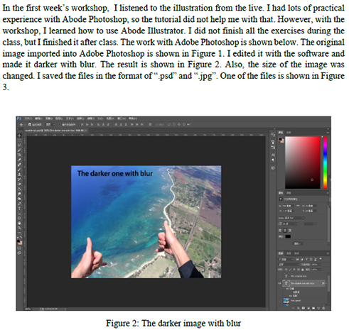

About Me

Jiyun Mei
Contact
Phone
(+61) 0403384000Assessments
Design Exploration
Poster 1
Poster 2
An example of my work
Major Project
Project Management
A screenshot of my discussion note
Part A
Screenshot of our workplan
Part B
Screenshot of a map on our pages
Part C
An interactive map used on our campsites page
Participation and Journaling

Screenshot of one of my journals
Portfolio
An abandoned design (background image of this page)
Course
Other Work

A male character for DECO7381's project, included in the final product.

A component (collared shirt) of a character for DECO7381's project, included in the final product.